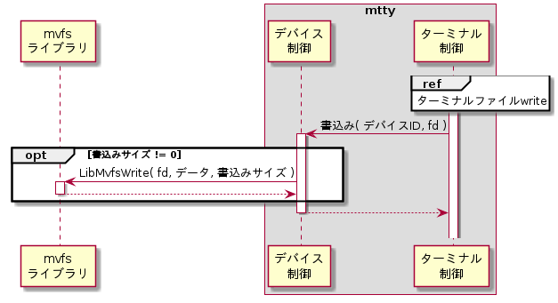
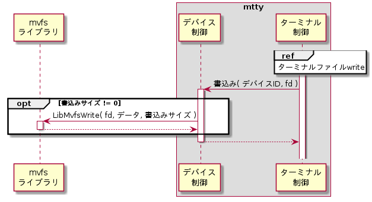

デバイス制御モジュール
デバイス制御モジュールは下記機能を持つ。
デバイスファイルread
デバイスファイルからデータが読込み可能になった時に、以下のシーケンス通りに処理を行う。
シーケンス

デバイスファイルread
デバイスファイルからデータを読み込む。詳細は外部仕様(デバイスファイルread機能)のデバイスファイルreadを参照のこと。
バッファ追加
バッファ管理モジュールのバッファ追加機能を起動して読込んだデータをバッファに追加する。詳細はバッファ管理モジュールを参照のこと。
読込みレディ
ターミナル制御モジュールの読込みレディ通知機能を用いて、ターミナルファイルの読込みレディを通知する。詳細はターミナル制御モジュールを参照のこと。
エコー
エコーモジュールのエコー機能を起動して読込んだデータを書き戻してエコーする。詳細はエコーモジュールを参照のこと。
デバイスファイルwrite
ユーザからターミナルファイルwrite要求を受け付けた時に、以下のシーケンス通りに処理を行う。
シーケンス


デバイスファイルwrite
デバイスへデータを書き込む。詳細は外部仕様(デバイスファイルwrite機能)のデバイスファイルreadを参照のこと。